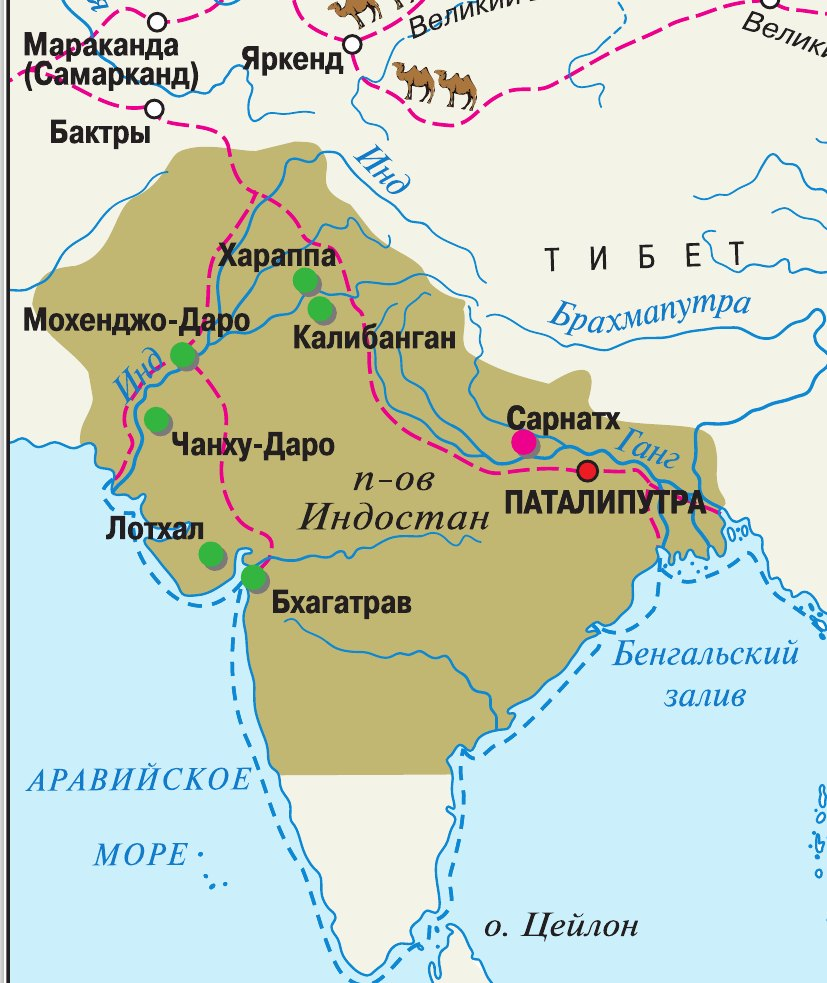
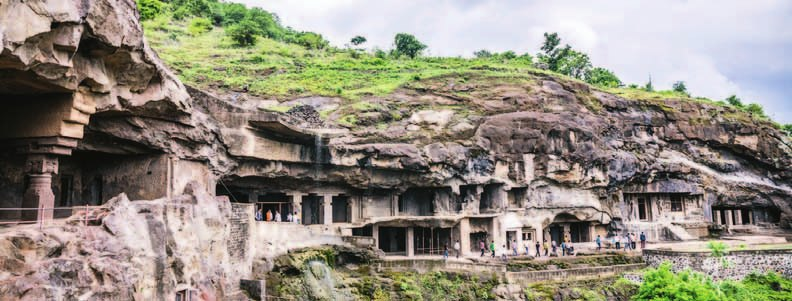
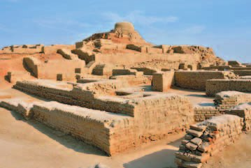
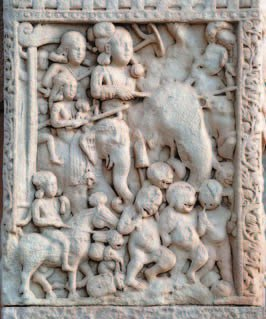
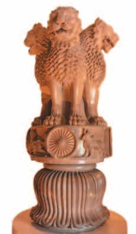
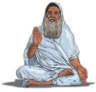
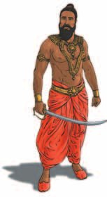
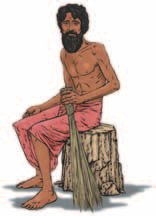
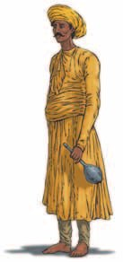

▲ Найди на карте города Мохенджо-Даро и Хараппу. Какие условия помогали им развиваться?
Природные условия
Индия лежит на полуострове в южной части Азии. С севера её закрывают — они не пускают в страну холодные ветры. С юга её омывают тёплые воды Индийского океана.
Климат Индии жаркий и влажный. В сезон дождей реки выходят из берегов.
Долины двух самых больших рек, и , плодородны. Земледельцы поселились здесь в глубокой древности.
Но землю приходилось отвоёвывать. Большую часть Индии в древности покрывали болота и джунгли — участки под посевы отбирали у них упорным трудом.
Индия располагается на полуострове Индостан в южной части Азии. Гималайские горы защищают страну от северных ветров, с юга её омывают тёплые воды Индийского океана.
Климат Индии жаркий и влажный. Во время сезона дождей реки выходят из берегов. Долины самых больших рек, Инда и Ганга, плодородны. Земледельцы обосновались здесь в глубокой древности. Они упорно отвоёвывали участки земли под посевы, поскольку большую часть Индии в древности покрывали болота и джунгли.

- Чем занималось население Древней Индии? Вспомни, в каких странах был такой же тип хозяйства.
1. Гималаи — это стена в несколько километров высотой. Что они дали Индии, кроме защиты от ветра?
2. Долины Инда и Ганга плодородны — казалось бы, живи и паши. Почему же землю приходилось «упорно отвоёвывать»?
3. В сезон дождей реки выходят из берегов. Вспомни §5: где ты уже встречал такое — и почему это оказалось важно?
Хараппская цивилизация
В долине реки Инд в середине 3-го тысячелетия до н. э. жили земледельцы, создавшие свою особую культуру. Они знали многие ремёсла, имели письменность, умели плавить медь и строить города.
Самый известный их город стоял в месте, которое сейчас называют Хараппа. После раскопок там вся эта культура и получила название — или индской, по имени реки.
Жители городов занимались земледелием и скотоводством. Разводили овец, коз, буйволов, даже слонов. А ещё торговали: в городах юга Месопотамии археологи нашли вещи с берегов Инда.
Своего имени этой страны мы не знаем. Оно дошло только через месопотамские тексты — там её называли , «далёкая страна».
После раскопок города учёные смогли восстановить, как жили его обитатели. В центре, на холме, возвышалась крепость с дворцом и огромным амбаром для зерна.
Вдоль прямых и широких улиц стояли двух- и трёхэтажные дома из красного обожжённого кирпича. На перекрёстках углы зданий закругляли, чтобы не мешать проезду повозок.
Крыши были плоские — душными летними ночами на них спали. Почти в каждом доме были колодец и комната для омовений, а грязная вода стекала в общегородской канал, который уводил её далеко за город. Нашли и остатки плавательного бассейна с комнатами для отдыха. Среди находок было много орудий труда и украшений.
А потом всё кончилось. К середине 2-го тысячелетия до н. э. жители внезапно покинули свои города. Причину до сих пор не знают. Древнейшая цивилизация Индии исчезла безвозвратно, оставив после себя величественные руины.
В долине реки Инд в середине 3-го тысячелетия до н. э. жили земледельцы, создавшие самобытную культуру. Они знали многие ремёсла, имели письменность, умели плавить медь и строить города. Самый известный из построенных ими городов располагался в месте, называемом сейчас Хараппа, поэтому после произведённых там раскопок вся цивилизация получила название хараппская, или индская.
Жители древнеиндских городов занимались земледелием и скотоводством. Разводили овец, коз, буйволов, даже слонов. Существование торговых связей с другими государствами подтверждают находки предметов с берегов Инда в городах юга Месопотамии. Название страны древнеиндской цивилизации дошло только в месопотамских текстах как «далёкая страна» — Мелухха.
После раскопок древнеиндского города Мохенджо-Даро (современное название) археологи смогли восстановить образ жизни его обитателей. В центре города на холме возвышалась крепость, где находились дворец и огромный амбар для зерна. Вдоль прямых и широких улиц стояли двух- и трёхэтажные дома из красного обожжённого кирпича. На перекрёстках улиц углы зданий закруглялись, чтобы не мешать проезду повозок. Дома имели плоские крыши, душными летними ночами на них спали. Почти в каждом доме были колодец и комната для омовений. Грязная вода стекала в общегородской канал, выводивший её далеко за город. В Мохенджо-Даро найдены остатки плавательного бассейна с помещениями для отдыха. Среди находок было много орудий труда и украшений.
К середине 2-го тысячелетия до н. э. по неизвестной пока причине жители внезапно покинули древнеиндские города. Древнейшая цивилизация Индии безвозвратно исчезла, оставив после себя величественные руины.

▲ Приведи примеры, подтверждающие, что хараппская цивилизация отличалась высоким уровнем развития.
- Приведи примеры, подтверждающие, что хараппская цивилизация отличалась высоким уровнем развития.
- Найди и покажи на карте города Мохенджо-Даро и Хараппу. Какие условия благоприятствовали их развитию?
4. Мы знаем про эту цивилизацию всё — как строили, чем торговали, где мылись. А как называлась сама страна — не знаем. Почему так вышло?
5. Почему учёные вообще уверены, что жители Мохенджо-Даро торговали с Месопотамией?
6. Углы домов на перекрёстках закругляли. Что эта мелочь говорит о городе?
7. Города покинули «внезапно» и «по неизвестной причине». Откуда учёные знают, что уход был именно внезапным?
Империя Маурьев
В середине 2-го тысячелетия до н. э. на Индостан с северо-запада вторглись племена . От местных жителей они отличались культурой, языком и занятиями: говорили на и в основном пасли скот.
Расселяясь по Индии, арии переходили к оседлой жизни и земледелию. Со временем они смешались с населением Северной Индии. А в начале 1-го тысячелетия до н. э. их потомки-индийцы научились добывать и обрабатывать железо.
Во главе арийских племён стояли вожди — . Постепенно они превратились в царей. В 1-м тысячелетии до н. э. на территории Индии существовало множество царств, враждовавших между собой.
В конце IV (4) века до н. э. после долгих и кровопролитных войн северную часть Индии подчинил царь из рода Маурья — основатель . Власть его потомка, царя , правившего в середине III (3) века до н. э., распространялась почти на всю Индию.
Но государство просуществовало недолго и распалось вскоре после смерти Ашоки.
Спустя несколько веков в Северной Индии возвысилась . Самудрагупта (335—380 годы) включил в свою империю ряд княжеств, и вся Северная Индия снова объединилась под одной властью.
Его сын Чандрагупта II (2) (380—415 годы) расширил государство, укрепил его изнутри, помогал развитию науки и искусства. Его царствование называют Гуптов.
Но в V—VI (5—6) веках с северо-востока и запада пришли стремительные кочевники — и уничтожили эту державу.
В середине 2-го тысячелетия до н. э. с северо-запада на территорию Индостана вторглись племена ариев. От местных жителей они отличались культурой, языком и занятиями. Пришельцы говорили на другом языке — санскрите, занимались в основном скотоводством. Арии, расселяясь по территории Индии, переходили к оседлому образу жизни и земледелию. Со временем они смешались с населением Северной Индии. В начале 1-го тысячелетия до н. э. их потомки-индийцы научились добывать и обрабатывать железо.
Во главе арийских племён стояли вожди — раджи, которые превратились в царей. В 1-м тысячелетии до н. э. на территории Индии существовало множество царств, враждовавших между собой.
В конце IV (4) века до н. э. после долгих и кровопролитных войн северную часть Индии подчинил царь Чандрагупта из рода Маурья, основатель империи Маурьев. Власть его потомка, царя Ашоки, правившего в середине III (3) века до н. э., распространялась почти на всю Индию.
Но его государство просуществовало недолго и распалось вскоре после смерти Ашоки.
Спустя несколько веков в Северной Индии возвысилась династия Гуптов. Один из её представителей, Самудрагупта (335—380 годы), включил в состав своей империи ряд княжеств. Вся Северная Индия была вновь объединена под одной властью. Сын Самудрагупты, Чандрагупта II (2) (380—415 годы), расширил пределы своего государства, упрочил его внутреннее положение, способствовал развитию науки и искусства. Время царствования Чандрагупты II (2) в исторической литературе называют «золотым веком» Гуптов. Однако стремительные кочевники, пришедшие в V—VI (5—6) веках с северо-востока и запада, уничтожили эту державу.

По сохранившимся описаниям, Ашока был жесток. Будущий царь с детства больше всего любил охоту. На ней он остро чувствовал свою власть над живыми существами. Продолжая политику деда и отца, Ашока активно расширял свои владения. При нём территория государства заняла практически весь полуостров Индостан. Император много воевал и был беспощаден к побеждённым, поэтому получил прозвище Ашока Жестокий.
В высеченном на скале указе Ашоки говорилось: «Спустя восемь лет после восшествия на престол я завоевал (небольшое государство на востоке Индостана). Сто пятьдесят тысяч человек взяты в плен, сто тысяч убиты и ещё множество умерло».
Позже Ашока проникся учением Будды. Властитель навсегда отверг жестокость и войны и из Ашоки Жестокого превратился в Ашоку Милостивого.

- Какую роль сыграли арии в истории Древней Индии?
8. Арии пришли скотоводами, а их потомки стали пахать землю и добывать железо. Кто кого в итоге изменил?
9. Вожди-раджи со временем «превратились в царей». В чём разница между вождём племени и царём?
10. Ашока получил два прозвища — Жестокий и Милостивый. Что заставило его перемениться?
11. Державу Маурьев и державу Гуптов создали по-разному, а конец у обеих похожий. Что их погубило?
Структура индийского общества
Всё население Индии делилось на четыре группы со строго определёнными занятиями, правами и обязанностями — . Это варны жрецов, воинов, земледельцев с ремесленниками и купцами, а также слуг. На санскрите «варна» значит «сорт», «категория».
По легенде, варны создал главный индийский бог . Из своих уст он сделал жрецов — , поэтому только они могли беседовать с богами. Из могучих рук вышли воины — . Из бёдер бог создал обычных общинников, земледельцев и ремесленников — . А из ног, запачканных в грязи, — , слуг.
Варну нельзя было выбрать. Каждый индиец оставался в той же варне, что и его отец: сын жреца становился жрецом, сын воина — воином. По закону никто не мог перейти из одной варны в другую.
Люди разных варн различались не только родом занятий, но и своими домами, покроем одежды и даже её цветом.
Со временем варны дробились и смешивались — так появились . Их названия произошли от многочисленных профессий и занятий, передаваемых по наследству. Всего насчитывается около 3,5 тысячи каст.
Всё население Индии делилось на четыре группы людей со строго определёнными занятиями, правами и обязанностями — варны жрецов, воинов, земледельцев, ремесленников и купцов, а также слуг. Слово «варна» на санскрите, в частности, значит «сорт», «категория». По легенде, варны создал главный индийский бог Брахма. Из своих уст он сделал жрецов — брахманов, поэтому только они могли беседовать с богами. Из могучих рук его вышли воины — кшатрии. Из своих бёдер бог создал обычных общинников, земледельцев и ремесленников — вайшьев, из ног, запачканных в грязи, шудр — слуг.
Каждый индиец должен был оставаться в той же варне, что и его отец. Сын жреца становился жрецом, сын воина — воином. По закону никто не мог перейти из одной варны в другую. Люди разных варн различались не только родом занятий, но и своими домами, покроем одежды и даже её цветом. В результате дробления и смешения варн появились касты, названия которых произошли от многочисленных профессий и занятий, передаваемых по наследству (всего насчитывается около 3,5 тысячи каст).




В тексте сказано: варны различались занятиями, покроем одежды и даже её цветом. Вот на что смотреть:
— брахман, жрец: сидит в белой одежде, рука поднята — он говорит с богами;
— кшатрий, воин: при оружии, меч у пояса;
— вайшья: с кошелём — это купец, человек торговли и хозяйства;
— шудра, слуга: без верхней одежды, с метлой, то есть за работой по хозяйству.
- Какие варны существовали в Индии и чем они различались?
12. Варны придумали как легенду о теле бога. Кому такое объяснение было выгодно и почему?
13. Закон запрещал переходить из варны в варну. Но касты всё-таки появились — откуда, если переходить нельзя?
14. В §6—7 ты читал про власть фараона, в §16 — про сатрапов и «уши царя». А в Индии жёсткой центральной власти не было. Что тогда держало общество в порядке?
Подведём итоги
- Какие династии правили в Древней Индии? Чем отличалось их правление?
- Когда возникла династия Маурьев? В какое время и почему она достигла своего расцвета?
- Подумай, почему в Древней Индии сложилась структура общества, состоящая из варн. Сохранилась ли подобная структура в наше время?
- Сравни образ жизни в Древней Индии и странах Междуречья. В чём сходство? В чём различия?
- Используя дополнительные источники информации, подготовь сообщение о культуре ариев и о том, как она повлияла на культуру Древней Индии.
Прочитай отрывок из и ответь на вопрос. Вместо названий варн в тексте стоят пропуски — их и надо угадать.
1) Пастьбу скота и также раздачу (милостыни), жертвоприношение, изучение (Веды), торговлю, ростовщичество и земледелие — для…
2) Охрану подданных, раздачу (милостыни), жертвоприношение, изучение (Веды) и неприверженность к мирским утехам он (Брахма) указал для…
3) Обучение, изучение Веды, жертвоприношение для себя и жертвоприношение для других, раздачу и получение милостыни он (Брахма) установил для…
4) Но только одно занятие Владыка указал для… — служение этим варнам со смирением.
5) Имуществом их (должны быть только) собаки и ослы… Пища (должна им даваться) в разбитой посуде, украшение (их должно быть) из железа, и они должны постоянно кочевать.
1) земледелие, торговля, скот — это вайшьи;
2) охрана подданных — кшатрии, воины;
3) обучение и жертвоприношения для других — брахманы, жрецы;
4) служение остальным варнам со смирением — шудры;
5) здесь речь о тех, кто стоял даже ниже шудр: им доставалась разбитая посуда, украшения из железа и вечное кочевье. Обрати внимание, как подробно расписано даже то, из чего им носить украшения — порядок касался каждой мелочи жизни.
Сформулируй ответ на главный вопрос параграфа — в чём заключается особенность цивилизации Древней Индии? Приведи два-три довода.
Проверь себя
Нажимай по очереди — от самого древнего события к самому близкому к нам.
1. Что защищает Индию с севера?
2. По какой реке названа первая индийская цивилизация?
3. Что находилось в центре Мохенджо-Даро, на холме?
4. На каком языке говорили арии?
5. Почему Ашока сменил прозвище Жестокий на Милостивый?
6. Из какой части тела Брахмы, по легенде, вышли воины-кшатрии?
Расскажи вслух
Природа Индии
- Полуостров Индостан на юге Азии: Гималаи с севера не пускают холодные ветры, с юга — тёплый Индийский океан.
- Климат жаркий и влажный, в сезон дождей реки выходят из берегов; долины Инда и Ганга плодородны.
- Землю отвоёвывали у болот и джунглей, которые покрывали бóльшую часть страны.
Хараппская цивилизация
- Середина 3-го тысячелетия до н. э., долина Инда: ремёсла, письменность, медь, города; названа по месту раскопок Хараппа.
- Мохенджо-Даро: крепость с дворцом и амбаром, прямые улицы, кирпичные дома в 2—3 этажа, колодцы и комнаты для омовений, канал за город, бассейн.
- Торговали с Месопотамией — там нашли вещи с берегов Инда; имя страны дошло только как «Мелухха». К середине 2-го тысячелетия до н. э. жители внезапно ушли, причина неизвестна.
Арии и цари Индии
- Середина 2-го тыс. до н. э.: арии пришли с северо-запада, говорили на санскрите, пасли скот; потом осели, стали пахать и смешались с местными.
- Начало 1-го тыс. до н. э. — железо; вожди-раджи стали царями, царств было множество, и они враждовали.
- Конец IV в. до н. э. — Чандрагупта Маурья; середина III в. до н. э. — Ашока; после его смерти распад. Потом Гупты: Самудрагупта (335—380) и Чандрагупта II (380—415), «золотой век»; в V—VI веках державу уничтожили кочевники.
Варны и касты
- Четыре варны со строго определёнными занятиями, правами и обязанностями; «варна» на санскрите — «сорт», «категория».
- По легенде их создал Брахма: из уст брахманов-жрецов, из рук кшатриев-воинов, из бёдер вайшьев, из ног шудр-слуг.
- Варна передавалась от отца к сыну, переход запрещал закон; различались домом, покроем и цветом одежды. Из дробления варн вышли касты — около 3,5 тысячи.
Чем Индия отличалась от других стран Востока
- Не было жёсткой центральной власти — деспотии, как в Египте, Ассирии или Персии.
- Её заменяло жёсткое деление общества на варны и касты.
- Каждый всю жизнь занимался тем, чем был должен, без особого внешнего принуждения — порядок держался изнутри, а не страхом.